Escher
An AI interface for running a cloud estate. Ask about cost, security or reliability, and get an answer you can check and act on.
- Role
- Product designer. Built the prototype end to end, and now the frontend of the desktop app.
- Company
- Tessell
- Platforms
- Desktop app (Tauri) and web prototype
- Team
- Two product designers, 2026

The problem
Companies were forecast to spend $723 billion on public cloud in 2025, and nearly a third of it is wasted. When something breaks, the answer is spread across a dozen consoles, runbooks and people’s heads. AI can answer fast, but no engineer will put an answer they can’t check on call.
Public cloud spend forecast for 2025
GartnerOf cloud spend estimated to be wasted
Flexera, 2026Of organisations call managing cloud spend their top challenge
Flexera, 2025Of outages cost $100K or more
Uptime Institute, 2022Scattered
Cost, security and performance data live in separate tools, each with its own console.
Untrusted
A confident paragraph from a model isn’t evidence. Without sources, it can’t be acted on.
Manual
Fixes are still written by hand in Python, Bash and Terraform, one incident at a time.
The data to fix all of this already exists. Nothing connects it, checks it and acts on it safely.
Who it’s for
A staff-level SRE who owns production reliability and writes the runbooks today. Their test is simple: would I put this on call?
The same estate answers different questions for seven roles.
- SRE
- Admin
- SecOps
- DevOps
- FinOps
- Platform
- Compliance
The model
Every cloudops task is one of five steps: Design, Develop, Detect, Debug, Deploy. Building something new and fixing something broken both end at Deploy.
An alert arrives with context
The signal comes already linked to the resources, owners and history around it.
Ask anything
Plain-language questions, answered from the live estate.
Escher proposes the work
It watches for drift and suggests fixes before anyone asks.
Principles
Grounded
Every claim cites live estate data. Missing data is said plainly, never filled in.
Safe
Fixes are plans you can read like a diff, with approval, dry run and rollback.
Earned trust
Automation moves from shadow to live on evidence. One switch pulls it all back.
Sketches
Ideas from stakeholders became HTML sketches people could click, long before they reached the prototype. There are 24 of them, from the knowledge base to what happens when the model goes down.
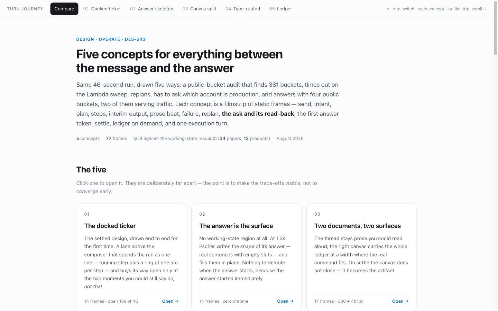
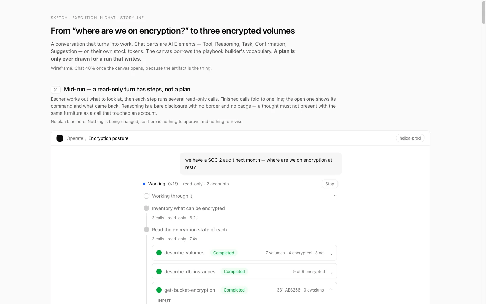
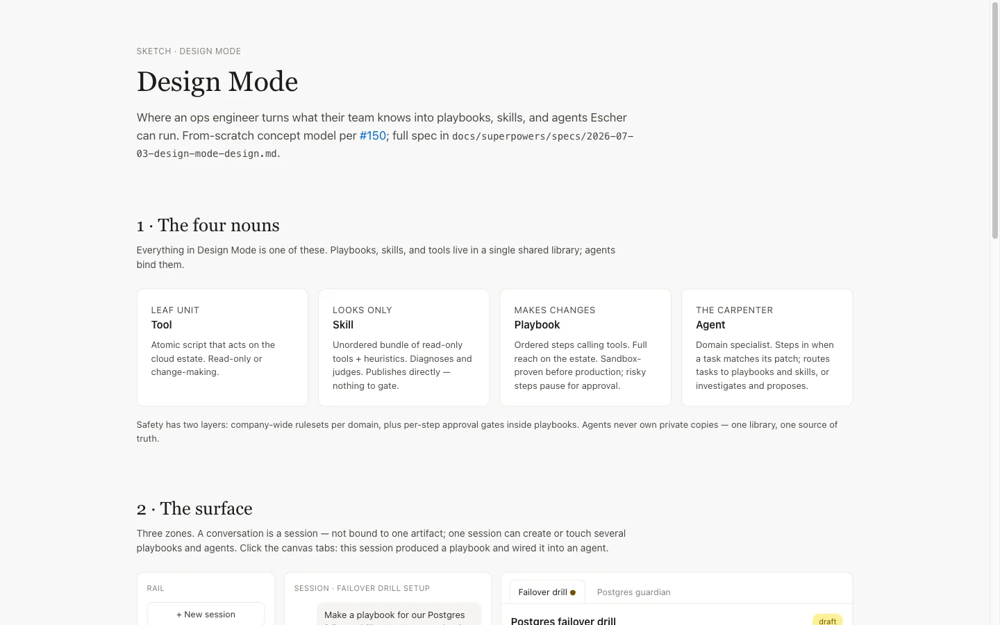
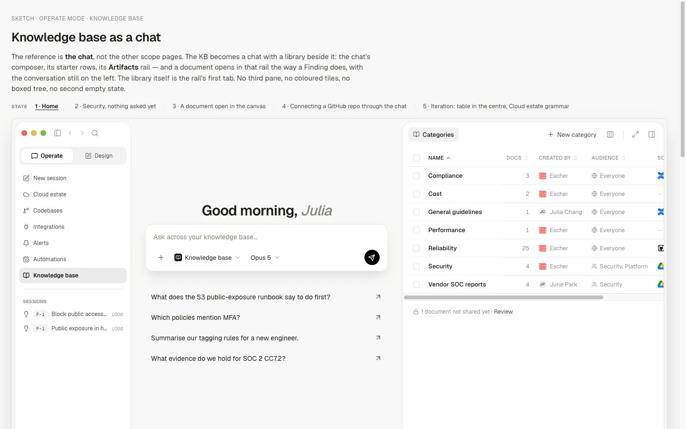
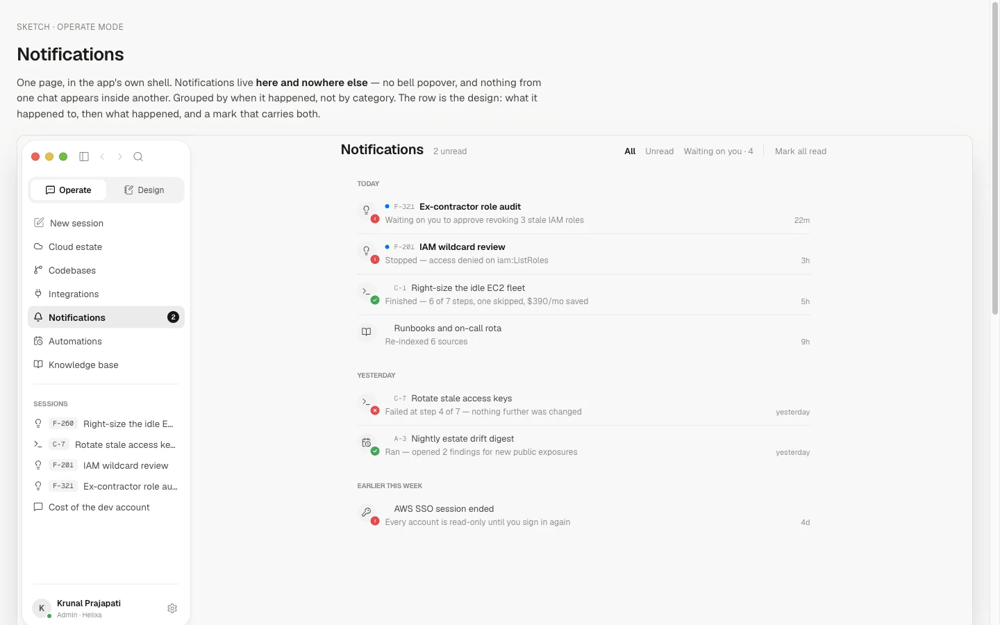
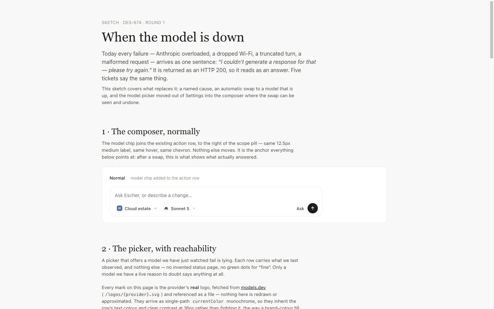
Ask
Type a question and the answer comes back as interface: numbers, tables and cards built for that question, each one citing its source. Reports run in two passes. The first finds the facts and the second writes them up, so the writing can’t claim more than the data shows.
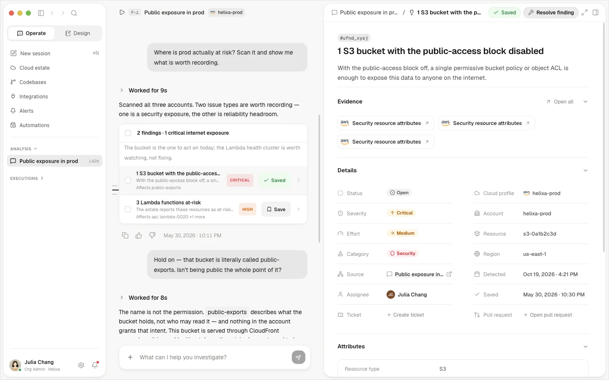
Plan and execute
A fix arrives as a plan with its blast radius and risk shown up front. You read the change like a diff, approve it, and watch each step run, with a record of why every step happened.
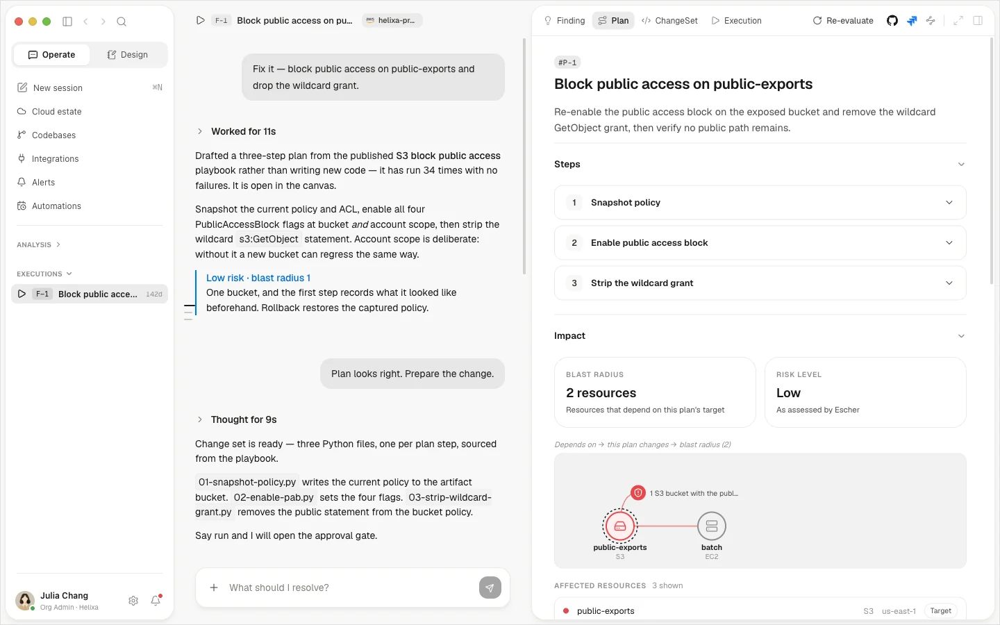
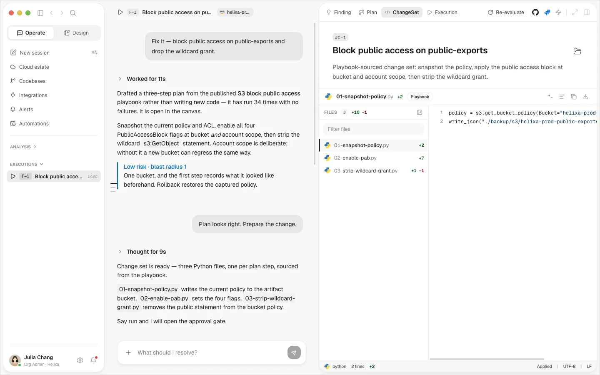
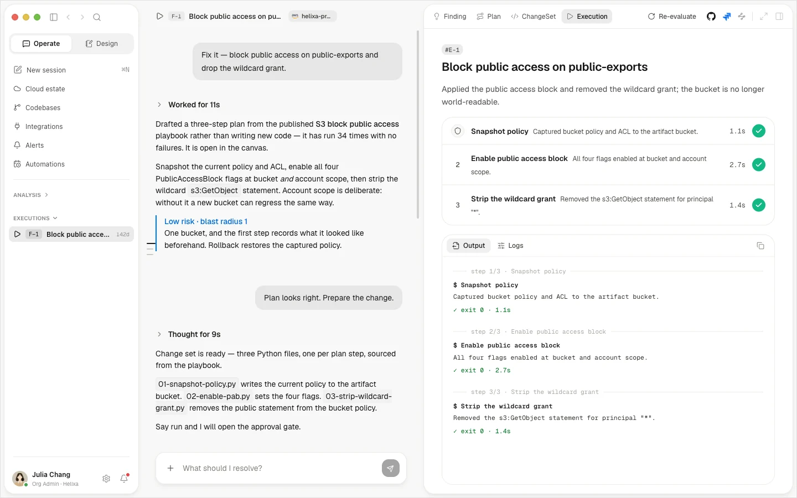
Design mode
Operators write playbooks by talking them through instead of scripting them. Imported runbooks become playbooks too, and each one keeps its success rate and evidence.
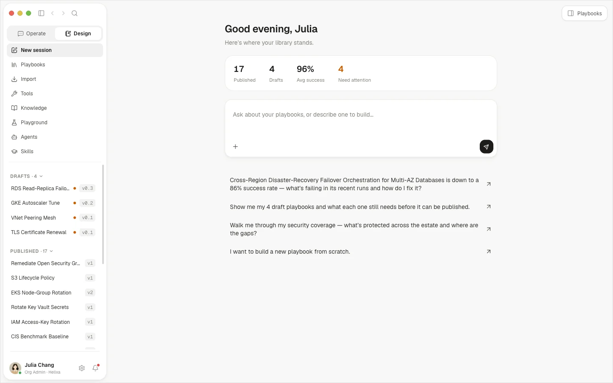
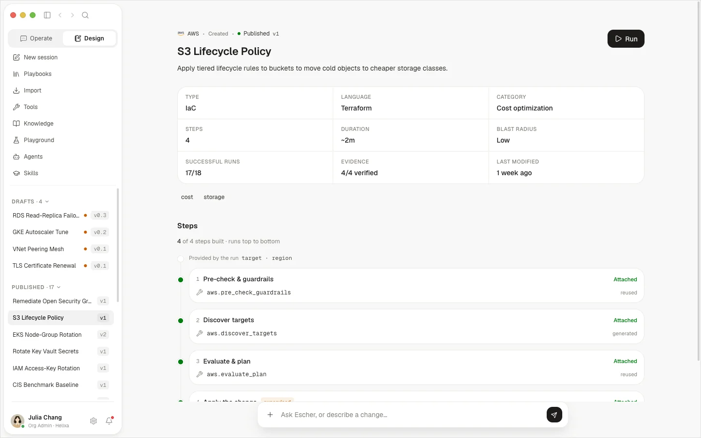
Agents
Agents start as drafts, run in shadow until their results earn trust, then go live one playbook at a time. One switch drops every agent back to propose-only.
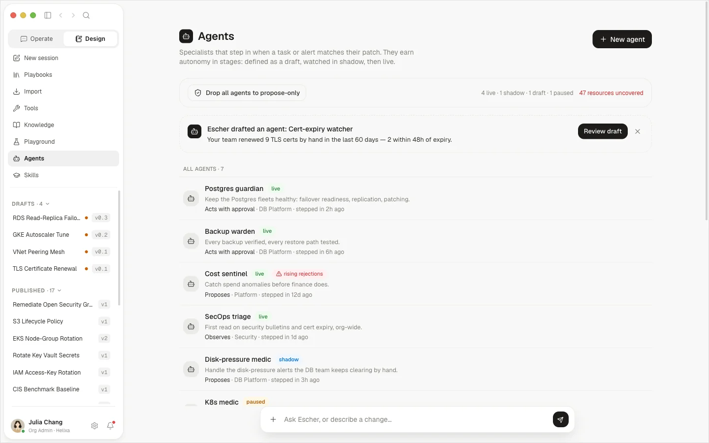
Design system
One token file builds CSS variables, a Tailwind theme and typed tokens, and every app reads from it. Change a colour once and every app picks it up.
Ink#1D1C1B
Paper#F8F8F7
Stone#EAEAE7
Escher#FA504A
Action#0265DC
Success#007C0F
Warning#E8C600
Danger#D31510
Geist. Interface and reading text.
Geist Mono. Code, IDs and logs.
Semantic tokens: colour, space, radius, type, shadow
Source file, built into CSS, Tailwind and TypeScript
Changes needed in each app when a token changes
How it’s built
The prototype runs entirely in the browser against a made-up estate, so anyone can explore it without connecting a real cloud account.
- React, ViteA client-only web app. The shipping product is a Tauri desktop app built from the same frontend.
- Generative UIThe model answers in OpenUI Lang, which renders as real components rather than text.
- Typed storesA Repository layer over a seeded estate: signals, findings, plans, runs and playbooks.
- pnpm, TurborepoOne monorepo for the apps and the shared design-system package.
- VercelPassword-gated deploys, with share links kept in Vercel Blob.
How we worked
One repo, with one set of rules for people and AI agents: an agent roster, issue-first changes and a decision log that stops settled debates from reopening. Vision became sketches, approved sketches became the prototype, and the prototype’s code moves into the app.
Commits since May 2026
Of them mine
Decisions logged
Sketches
Outcome
Tessell uses the prototype to demo Escher to potential customers and investors. Its frontend code moves straight into the Tauri app, so the prototype works as a spec as well as a demo.
What I learned
A bigger role
I started as a product designer making a prototype. Now I build the frontend of the desktop app as well.
A different process
Design happens in working code instead of static mockups. The sketch, the prototype and the shipped frontend are the same material.
A faster pace
Ideas go from sketch to something people can click in days, not weeks.